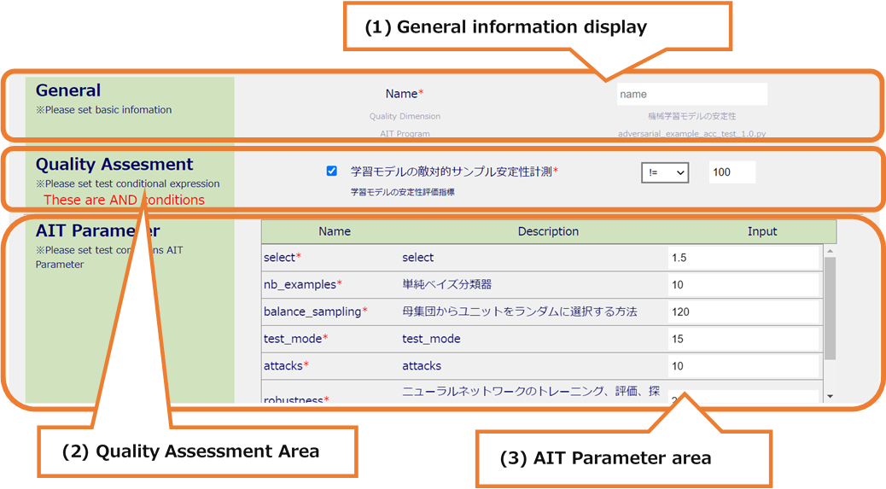
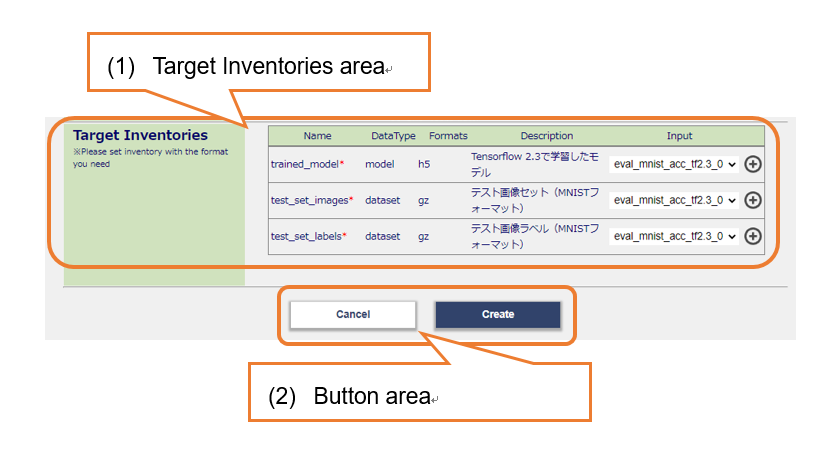

7.1. TestDescriptionsCopy¶
Copy the created TestDescription and create a TestDescription with a parent-child relationship
7.1.1. All areas¶
All areas

(1) Submenu area
a. Sign-in Information Display
b. Language Switching (Japanese / English)
c. Inventories
d. TestDescriptions
e. Display Contents
f. MLComponents
g. Sign-out
(2) Header area
a. MLComponent name display
(3) Main area
a. General information input
b. Quality Assessment area
c. AIT Parameter area
d. Target Inventories area
e. Button area
7.1.2. Main Area¶
Main Area (first half)

(1) General information display
It is possible to register a new name.
Quality Dimension and AIT Program cannot be changed.
(2) Quality Assessment Area
It is possible to set the Quality Assessment information you want to register.
The registered information of the copy source has been entered.
If you check the check box, you can enter it.
If there are multiple items, the test pass condition is in the relationship of “&”.
After confirming the item name and detailed information, you can set the test pass condition by selecting the relational operator in the select box and entering the value.
If the check box is unchecked, it becomes inactive and can be registered as not subject to the test pass conditions.
(3) AIT Parameter area
It is possible to set the information of the AIT Parameter you want to register.
The registered information of the copy source has been entered.
Check the name and detailed information, and enter the input value.
If there are many display items, it can be scrolled.
Main Area (second half)

(1) Target Inventories area
Select the Target Inventory you want to register.
The registered information of the copy source has been entered.
Check the name, format, detailed information, and select Inventory.
If there are many display items, it is possible to scroll.
If there is no Inventory that matches the format, it is possible to add an Inventory by pressing the Add Inventory button to display the Add Inventory modal.
(2) Button area
It is possible to create Description by pressing the Create button.
If there is an input error, an error message will be displayed at the top of the screen.
It is possible to return to the Test Descriptions screen by pressing the Cancel button.